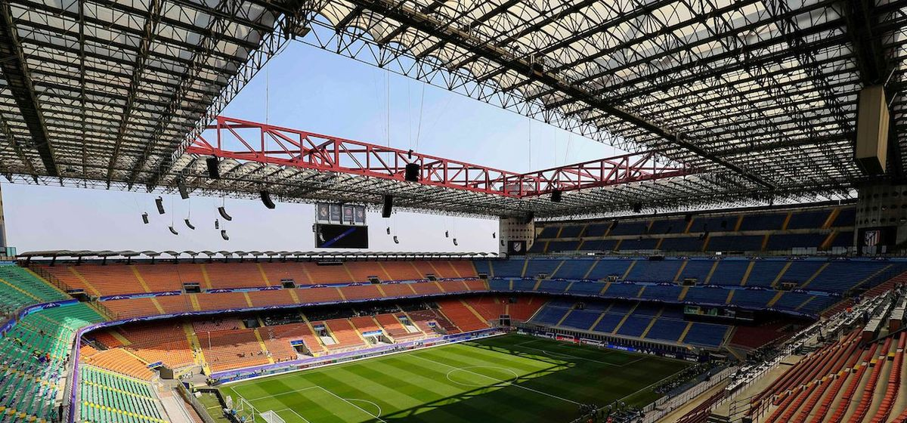

Сан Сиро футбольный стадион ФК Милан
Камп Ноу футбольный стадион ФК Барселона
Энфилд футбольный стадион ФК Ливерпуль
Сантияго Бернабеу футбольный стадион Фк Реал Мадрид
Заголовок рисунка

(c) Некрасов Е.Д